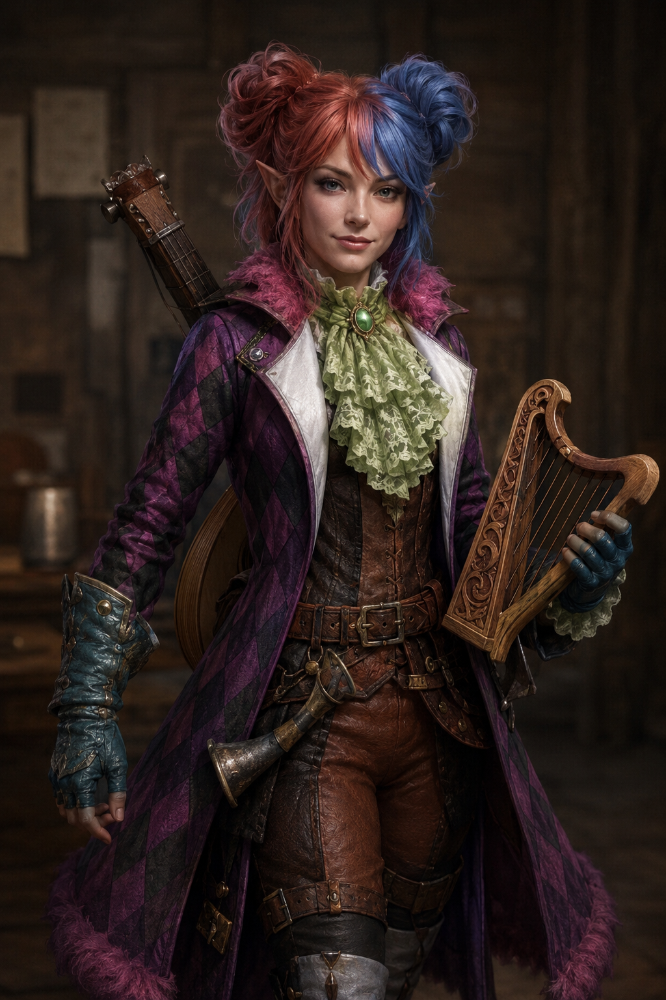

High Elf | Bard (College of Glamor) | Neutral Good

generally...
Ideal: Charity. what what
Bond:what what
Flaw:what what
Born into a tightly bound multi-racial nomadic caravan family that wandered the roads of Impiltur and beyond, the elven woman was raised beneath traditions that valued obligation far above personal freedom. Within the caravan, marriages were arranged to preserve loyalty, bloodlines, and the authority of the clan’s elders. As she came of age, the futures presented to her felt less like opportunities and more like sentences. One suitor, a human gambler named Qint the Lucky, spoke obsessively of fathering half-elven children as though she were little more than a prize broodmare. The other was Vulfric the Bold, a broad-shouldered caravan enforcer whose violent temper and possessive nature filled her with quiet dread. Over time, the expectations surrounding her life became suffocating, and the thought of remaining with the caravan felt like surrendering herself piece by piece.
At last she fled beneath cover of darkness, abandoning the caravan and everyone within it before either marriage could be forced upon her. For a time she survived by drifting from roadside inns to market festivals, earning coin through song, storytelling, and performance while carefully avoiding the better-traveled roads where caravan folk might recognize her. Eventually her wandering brought her to the struggling village of West-Over-Farthing, a place so small and forgotten that she believed no one from her former life would ever think to search there. The recent famine and earthquake had left the village desperate for distraction and moments of joy, and her music quickly earned her a quiet place among the locals. Yet despite the peace she has begun to build, she remains deeply wary of strangers arriving from distant roads, for she knows at least two men from her former life would consider her escape both an insult and a theft—and neither strikes her as the sort willing to simply let the matter rest.